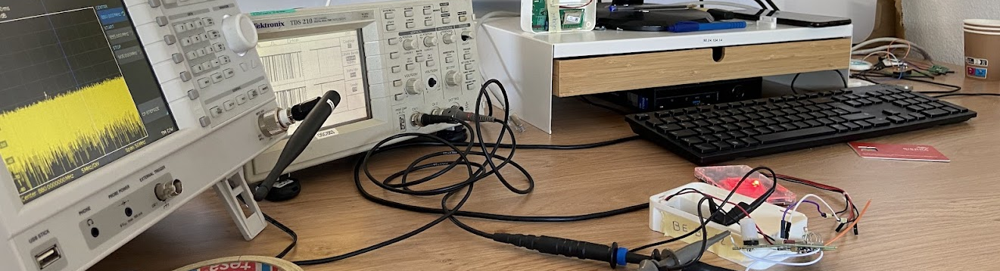
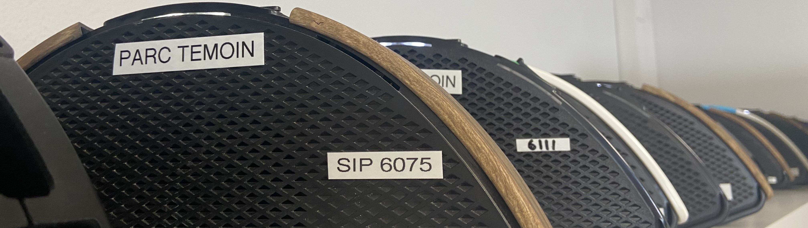

Les tests électriques consistent à vérifier le fonctionnement du montage électrique d’un système.
Cela permet de s’assurer que les montages sont capables de réaliser les tâches attendues.
Étude du montage :
Avant de tester un montage, il est essentiel de comprendre son fonctionnement.
Pour cela, je commence par découper le montage en différentes fonctions électriques (création d’une tension d’alimentation, protection contre les inversions, etc.).
J’étudie ensuite les caractéristiques des composants à l’aide de leurs datasheets et je les compare aux contraintes qu’ils subissent.
Cette analyse permet déjà d’identifier d’éventuelles incohérences dans le choix des composants ou dans la conception du montage.
Vérification du fonctionnement :
Pour vérifier le fonctionnement du montage, j’utilise le produit dans chacun de ses modes tout en analysant les tensions et courants clés (par exemple les tensions d’alimentation).
Je compare ensuite ces mesures aux valeurs attendues issues de mon étude théorique.
Comme le comportement des composants peut varier avec la température, je répète ces tests dans différentes conditions thermiques.
Les valeurs mesurées doivent rester cohérentes.
Consommation du produit :
Pendant les tests, je mesure également la consommation de courant du produit.
Cela me permet de détecter rapidement l’activation de certains composants et de vérifier que leur comportement est cohérent.
L’analyse de la consommation globale me permet aussi d’estimer la durée de vie du produit en fonction d’un profil d’utilisation.

Les tests fonctionnels consistent à vérifier que le produit répond correctement aux fonctionnalités attendues par l’utilisateur et respecte les spécifications.
Cela permet de s’assurer que chaque fonction réalise la tâche prévue dans les bonnes conditions d’utilisation.
Étude des fonctionnalités :
Avant de commencer les tests, j’analyse la manière dont le produit est susceptible de fonctionner.
Travaillant en boîte noire (sans accès au code source), je ne peux qu’émettre des hypothèses sur son fonctionnement interne.
Je classe les différentes actions possibles par ordre de priorité pour l’utilisateur et j’identifie les ressources utilisées.
Cela me permet de détecter d’éventuels conflits de ressources ou des cas où certaines ressources ne seraient pas correctement utilisées.
J’établis ensuite une liste de scénarios potentiels de dysfonctionnement.
Vérification du comportement :
Je commence par tester chaque mode individuellement dans des conditions simples afin de valider son fonctionnement de base.
Une fois ces tests validés, je combine les différents modes pour tester les scénarios plus complexes identifiés précédemment.
Cas de dysfonctionnement :
Lorsqu’un dysfonctionnement est détecté, je rédige un rapport détaillé précisant la version du produit, les manipulations effectuées et les conditions de test.
Cela permet de localiser rapidement le problème et d’aider à sa résolution.
Lorsqu’un bug est difficile à reproduire, je multiplie les tests en variant les environnements et les manipulations afin d’identifier le facteur déclencheur.
Certains de mes outils m’ont également permis de mettre en évidence des anomalies, comme l’outil
ARL, qui a révélé que certains produits pouvaient interrompre leurs communications radio sans action de l’utilisateur.
Il a également permis de détecter des taux de faux positifs anormaux.
Après deux années en qualification, j’ai acquis les compétences suivantes :